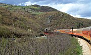
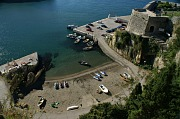
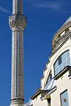
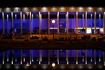
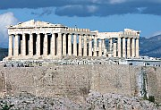

Disclaimer: These pages are not actively maintained, and some of the practical information on the site is out of date. I am working on a new version of the site that will focus more on my photos and memories of travel in Southeast Europe, and less on practical details that too easily become obsolete. In the meantime, please treat the information here with caution.
How to travel from Croatia to Greece (or from Greece to Croatia)
Introduction
Croatia and Greece look quite close together on a large scale map of Europe. This encourages many people to plan a holiday that combines both countries, on the assumption that getting from one to the other will be simple and speedy. In fact a journey between these two countries by sea or land is likely to involve at least 24 hours of travel. Depending on which regions in each country you want to visit, it could be a lot more than that. Of course you can always fly, but even flying often turns out to be more time-consuming and expensive than many travellers expect. For many people there is no obvious "best" option; hopefully the advice on this page will help you to choose a route that fits with your plans.
The best way to travel between Greece and Croatia is... as slowly as possible. The other Balkan countries may not benefit from tourist industry hype to the same degree as those two, but they all have plenty of things to see. With a week or more at your disposal you can travel at a relaxed pace, visiting places that are just as memorable as anywhere in Croatia or Greece. If you don't have that much time to spare but still want a two-country holiday, perhaps you could change your plans and combine two adjacent countries - Croatia and Montenegro, for example, or Greece and Bulgaria. If any of those options appeal to you, the other pages in this site have lots of suggestions for places to visit. In the remainder of this page I assume that you really do want to travel more or less directly between Greece and Croatia.
I know that some people are wary of embarking on overland travel through the Western Balkans because of safety concerns. This applies especially to Albania, and to a lesser extent to some parts of the former Yugoslavia. I believe these worries are mostly unnecessary - and you can trust me on this because I'm a coward. Although I have never travelled from Croatia to Greece in one go, I have visited all the places mentioned on this page, and don't believe they hold any particular dangers. Some governments warn against travel in northeast Albania, but none of the routes described here pass through that area.
Disclaimer: most of what follows was compiled in January 2009. Although I try to keep the information on this page up to date, this isn't always easy from a base outside the Balkans, so please allow for the possibility that things have changed. If you know of any relevant recent developments, or of alternatives to the routes described here, please let me know.
Route 1. Overland from Zagreb and Northern Croatia
As far as I know there are no direct trains or buses between Croatia and Greece. However it is quite straightforward to travel by land between the two countries via Serbia and Macedonia, provided your starting or finishing point is Zagreb. Unlike some of the other options outlined below, transport on these routes runs every day of the week throughout the year.
Until recently it was possible to take a direct train from Zagreb to Thessaloniki, but this service was dropped in late 2007. The route is still possible, but a change of trains in Belgrade is required. There are 5 trains daily between Zagreb and Belgrade (7 hours), and two daily trains from Belgrade via Skopje to Thessaloniki (14 hours). Allowing for connection time the trip takes at least 22 hours from Zagreb to Thessaloniki and 26 hours in the opposite direction. Delays of a couple of hours are common on the Thessalonik-Belgrade route in particular.
Once you reach Thessaloniki, Greece's second largest city, you shoudn't have any difficulty getting to your destination in Greece. Buses go to all points on the mainland. Train options are more limited. There is a good service to Athens, but these trains can get very crowded, and on Intercity services you are supposed to have a seat reservation. There are also overnight trains with couchette cars.
International train fares in this part of the world are often difficult to pin down, but Greek Railways quotes fares of €65 one way from Thessaloniki to Ljubljana, or €85 from Athens. Presumably fares to Zagreb are a little cheaper. Couchette and sleeper supplements are extra - perhaps €10-€15 per night.
Non-EU citizens should check visa requirements carefully before embarking on any of these routes, especially for Macedonia. If you do need a visa, be sure to establish whether it can be purchased at a land border - the rules vary depending on where you are from. If this is a problem for you, consider avoiding Macedonia by getting a train or bus from Belgrade to Sofia, from where there are three trains daily to Thessaloniki.
The table shows sample itineraries from Zagreb to Thessaloniki and back, based on the timetable as at January 2009. All times are local, i.e. Eastern European Time in Greece and Bulgaria, Central European Time everywhere else:
| From Croatia Option 1 | From Croatia Option 2 | From Greece Option 1 | From Greece Option 2 |
|---|---|---|---|
| Train 415 Depart Zagreb 11:00 Arrive Belgrade 17:18 |
Train 411 Depart Zagreb 23:55 Arrive Belgrade 06:21 (next day) |
Train 336 Depart Thessaloniki 09:45 Call at Skopje 12:45 Arrive Belgrade 22:33 |
Train 334 Depart Thessaloniki 17:05 Call at Skopje 20:14 Arrive Belgrade 05:44 (next day) |
| Train 335 Depart Belgrade 22:00 Call at Skopje 06:50 (next day) Arrive Thessaloniki 12:31 |
Train 337 Depart Belgrade 07:50 Call at Skopje 17:00 Arrive Thessaloniki 22:33 |
Train EC210 Depart Belgrade 05:50 (next day) Arrive Zagreb 12:56 |
Train 414 Depart Belgrade 10:35 Arrive Zagreb 17:52 |

Dubrovnik
Zagreb
Serbia

Skopje

Bar-Belgrade railway

Ulcinj

Shkodra

Tirana

Thessaloniki

Athens
Looking for more photos? Visit
The Balkanology Galleries
Most of this route can also be travelled by bus. There are quite a few coaches on the Zagreb-Belgrade and Belgrade-Skopje routes; these vehicle are usually quite comfortable and tend to be less subject to delays than the trains. However buses between the Republic of Macedonia and Greece are few and far between, so you are quite likely to end up on the train for the final leg of the trip.
If your starting point is anywhere in northwest Croatia, for example Istria or Plitvice, make your way to Zagreb and follow the above route.
If you have some time available for sightseeing, the vibrant city of Belgrade is the most obvious place to stop along this route - especially as you will have to change there anyway. It's well worth several days, both for its own sake and for a variety of possible excursions. Skopje can look like a bit of a concrete jungle at first glance, but does have a quirky appeal if you know what to look for. Most visitors to Macedonia prefer Lake Ohrid - it is some distance from the direct route to Greece but worth making the time for. Relatively few people visit Greece specifically to see Thessaloniki, and many travellers never get beyond the train station. Nevertheless it's another good place to spend a few days, and offers an interesting contrast to Athens - although some people are put off by the lack of budget places to stay.
Route 2. Overland from Dubrovnik and Southern Croatia
There are quite a few ways to travel overland from Dubrovnik to Greece, none of which stands out as the obvious best option.
2a. Routes through Albania
This is the most direct route. Travel from Dubrovnik to Thessaloniki via Albania requires "only" about 18 hours of bus travel. However it is highly unlikely that you can actually complete the trip within that timescale, as at least four separate buses are involved and they don't necessarily link up particularly well. Another drawback of this route is that it is very difficult to confirm any of the schedules in advance, so be prepared to adjust your plans as you go along.
The trip starts with a bus from Dubrovnik to Montenegro. Although schedules vary depending on the time of year, there is usually at least one morning bus daily that runs along the Montenegrin coast to Kotor (about 2.5 hours) and Budva (3-3.5 hours); you'll probably need to change in Budva to continue to Bar and Ulcinj (another 1.5 hours). There are also a few additional services beteen Dubrovnik and Herceg Novi, the first town on the Montenegrin side of the border, where it is easy to pick up a service along the coast.
Ulcinj is close to the Albanian border. You can catch a minibus to Shkodra on the other side of the border (1 to 2 hours depending on border delays, €5) - see the Albania FAQ for more details of this part of the trip. From Shkodra it is about 2.5 hours by bus or minibus (furgon) to Tirana. All public transport within Albania thins out drastically as the afternoon goes on, so you may prefer to stay overnight in Ulcinj (a pleasant seaside resort) and cross the border in the morning.
Another way to reach Tirana from the coast of Montenegro is to join one of the organised excursions advertised in Budva (and probably other coastal resorts). These tours run daily during the summer season (roughly May to September). Although aimed mainly at daytrippers, I am told that it is possible to arrange one-way transport to Tirana for 30 euro.
In Tirana (and other Albanian cities) buses to Greece are advertised by many travel agents - for example on the street between Tirana train station and the main square. If you want to get to Greece's west coast, you can head south to Gjirokastra (8 hours), from where you can get a bus to Ioannina (1.5 hours). If you are heading to Corfu, catch a bus from Tirana to Saranda (9 hours). Saranda is possibly the only place in Albania geared up for foreign visitors- there is even a tourist office where you can find out about transport schedules, including the regular ferries to Corfu. There are also direct buses from Tirana to Thessaloniki ("Selanik" in Albanian, 11 hours, about €28) and Athens ("Athine", 17 hours, about €35). Some domestic buses in Albania are quite uncomfortable, and minibuses can get very crowded - but at least they're cheap.
This route really comes into its own if you have time to linger along the way. If you try to do it quickly, you may have second thoughts as the bus skirts the Bay of Kotor - this is an excellent place to stop and explore for a day or a week; even if you don't have much time, try to spare a few hours for the old town of Kotor. Tirana doesn't have many unmissable sights but its laid-back atmosphere is enjoyable. The southwest corner of Albania, just before you get to Greece, boasts a wealth of attractions: the beaches and mountains of the Ionian coast between Vlora and Saranda, the roman ruins at Butrint, and the hilltop town of Gjirokastra.
2b. Routes through Serbia
An interesting alternative to the route through Albania starts in the same way, with a bus or combination of buses to Bar on the coast of Montenegro. There you can transfer to the Bar-Belgrade railway. This line is famous for its impressive scenery (especially the Montenegrin part) and infamous for frequent delays. There are at least two trains (one by day and one overnight) year round, with extra trains in summer; the (theoretical) journey time is 10 hours. Basic one-way fares are around €20, and an extra €20 or so will get you a berth in a sleeper. A slight variation on this route is to head inland from Kotor or Budva to Podgorica (frequent buses, 1.5 hours) and pick up the train at Podgorica.
There is also a direct train from Bar and Podgorica to Niš (13 hours) - a slightly more direct route than the one via Belgrade. Currently this is scheduled to run overnight from mid June to early September and during the day at other times of year. From Niš you can continue south to Skopje by train or more frequent bus. In previous summers there has been a through carriage all the way from Bar to Skopje, but I don't know if this will apply in 2009. Because of the very limited bus service to Thessaloniki, you will probably still end up on one of the two Belgrade-Skopje-Thessaloniki trains, so the route via Niš may not save you any time compared to travelling via Belgrade.
It is also possible to follow the route through Montenegro and Serbia by bus rather than train. Buses to Belgrade (9-10 hours) leave from several towns on the Montenegrin coast, including Herceg Novi near the Croatian border. You may even find a direct overnight bus to Niš (12-13 hours).
2c. Other overland Routes
A fairly straightforward way to reach the eastern part of Greece is to catch a direct bus from Dubrovnik to Skopje followed by a train to Thessaloniki. Unfortunately these buses run only in summer, and even then only a couple of times a week.
Another summer option starts in the same way as the routes through Albania, with a bus to Ulcinj. Ulcinj is a popular seaside resort for Kosovars, so there are quite a few overnight buses to various destinations in Kosovo, including the capital Pristina. Pristina is just a short hop from Skopje by bus (or less frequent train).
Yet another possibility is to head to Zagreb and then follow the route described in section 1 above. The bus to Zagreb takes 11 hours (€30), or you can get there in about the same time if you change to the train at Split. (It's worth noting that Croatia Airlines have several Dubrovnik-Zagreb flights daily, and fares are sometimes very cheap if you book well in advance). This choice of route has the advantages working equally well at any time of year and being easy to research in advance. The (big) disadvantage is that you will spend an awfully long time heading in completely the wrong direction.
A variation of this idea is to get a bus from Dubrovnik to Sarajevo (6 hours, typically twice daily) followed by a bus from Sarajevo to Belgrade (8 hours, frequent) or to Niš, where you can join the train route outlined in section 1. See the Bosnia FAQ for details of bus stations in Sarajevo. This is another route with good sightseeing opportunities - it would be a shame to miss both Mostar and Sarajevo.
Route 3. By Sea
A quarter of a century ago this would have been straightforward: you would simply have caught the direct ferry from Dubrovnik to Igoumenitsa, on Greece's Ionian coast. But much has happened in the Western Balkans since then. That particular route was abandoned long ago, and despite occasional rumours, there is no sign of it being restored any time soon.
It is still possible to travel between Greece and Croatia by ferry - but not directly. Instead you will have to take a rather large detour across the Adriatic to Italy. Ferry timetables change significantly depending on the season and day of the week - indeed it sometimes seems as if the goal of Jadrolinija, Croatia's biggest ferry company, is to operate a different schedule on every day of the year. So be sure to check timetables for the specific day you intend to travel - you can do this through the websites listed at the end of this page.
Ferry travel makes most sense if you are starting or finishing in Dubrovnik; the port of Bari is the most likely connection point. Jadrolinija runs a car ferry from Dubrovnik to Bari all year round. There are only two sailings per week in winter, increasing to six weekly sailings in July and August. The 9-hour journey typically runs overnight in both directions, leaving around 22:00 or 23:00, but there are also daytime sailings at certain times. Jadrolinija's fare structure is almost as complex as their timetable. The cheapest deck tickets run from €40 one way in low season to €55 on summer weekends. Reclining seats cost a little more, and there are numerous types of cabin with different levels of comfort and corresponding variations in the ticket price.
The Italy-Greece leg is more straightforward, as sailings are much more frequent and there is a greater choice of ferry operators. SuperFast Ferries, for example, run a daily car ferry all year round from Bari to Patras (15.5 hours), calling at Igoumenitsa (9.5 hours) en route. Most services leave in the evening. During summer some of these ferries also call at the island of Corfu. Again fares vary widely depending on the level of comfort. The cheapest deck tickets cost around €50 to €70 one way depending on season.
You should also check out other ferry operators - Agoudimos and Ventouris Lines also run all year round from Bari to Greece, while Azzura Line operates additional summer services between Dubrovnik and Bari. Most possible routes involve spending a whole day in Bari in between two overnight ferry journeys. During high season you may be able to find a route that involves less time hanging around, but this requires diligent study of the schedules and/or a large slice of luck. Ferries from Italy to Greece also run from Ancona (a longer journey than from Bari) and Brindisi (a slightly shorter trip); alternative Croatia-Italy routes include Split-Ancona and Split-Pescara.
If you arrive in Igoumenitsa your onward transport will be by bus - you're looking at a 7 hour trip to Athens or Thessaloniki. Arriving in Patras gives you the option of continuing to Athens either by train (3.5 hours, €5) or by frequent bus. Patras is also a good starting point if you want to explore the Peloponnese region.
The table shows just one possible itinerary for travel between Dubrovnik and Patras by ferry. This particular trip is feasible all year round on the day of the week shown in the table, and on some other days during summer. Again local times are shown - Greece is an hour ahead of Italy and Croatia.
| From Croatia | From Greece |
|---|---|
| Jadrolinija Ferry Depart Dubrovnik Tue 23:00 Arrive Bari Wed 08:00 |
SuperFast Ferry Depart Patras Tue 18:00 Call at Igoumenitsa Tue 23:30-23-59 Arrive Bari Wed 08:30 |
| SuperFast Ferry Depart Bari Wed 20:00 Call at Igoumenitsa Thu 06:00-06:30 Arrive Patras Thu 12:30 |
Jadrolinija Ferry Depart Bari Wed 22:00 Arrive Dubrovnik Thu 07:00 |
Route 4. By Air
Due to frequent changes to airline schedules, the following section should be taken as only a very rough guide - you will need to spend some time making your own investigations to find the route that suits you best.
Until recently there were no direct scheduled flights from Croatia to Greece. In summer 2010 Croatia Airlines introduced a three-times-weekly flight from Zagreb to Athens. This flight will operate again in summer 2011, with the addition of a stopover in Dubrovnik which will allow a direct connection from southern Croatia to the Greek capital.
If the Zagreb-Athens flights doesn't suit your schedule, you will probably find yourself making a connection somewhere in Central Europe (Austria, Germany, Hungary) or in Rome. Some of the most convenient connections are through Vienna with Austrian Airlines (or a combination of Croatia Airlines and Austrian Airlines) and Budapest with Malev. Generally these flights are not particularly cheap - if you can find a deal for less than €200 one way you're probably doing quite well.
A compromise option if you are starting in northern Croatia would be to travel between Zagreb and Belgrade by train or bus, and then catch a direct flight to Athens. Both JAT and Olympic fly this route; one-way fares with JAT can be as low as €99 including taxes. You may get to Athens more quickly by making the short train or bus to journey to Ljubljana and a flight to Athens with Adria Airways. The catch here is that these flights only operate three times weekly and tend to be quite expensive.
If you are starting from Dubrovnik your best option may be a combination of sea and air travel, starting with a ferry to Bari as described above, and flying from Bari to Athens with MyAir. The MyAir flight is often available for around €100, but it only operates three times weekly, and may leave too early for some ferry arrivals to allow a same-day connection in this direction; it works better in the reverse direction as the midday arrival allows plenty of time to connect with an evening ferry.
A combination of land and air transport is also possible starting from Dubrovnik. Most buses along the Montenegrin coast call at Tivat, between Kotor and Budva, from where JAT offers flights via Belgrade to Athens (but not every day). For a better choice of flights, especially in the off season, head inland on one of the frequent buses from the coast to Podgorica. On both routes JAT advertises one-way flights for around €130, but in high season you probably need to book well in advance.
Another part-bus, part-flight possibility is to travel to Tirana as outlined above and fly to Athens from there, avoiding the overnight bus journey. I've also heard of travellers flying from Athens to Rome, getting a train to Ancona, and a ferry from Ancona to Croatia.
Further information
For international train timetables your first stop should be German Railways' European Rail Timetable. Although coverage of the Balkans is not always 100% reliable, especially just after a significant timetable change, the schedules for the routes mentioned on this page are usually correct. (As at January 2009 the site does not appear to have full information about trains within Greece). Enter "Beograd" and "Athenes" rather than Belgrade and Athens; if you are prompted to choose between several Zagreb stations, the one you need is "Zagreb Glavni Kolodvor". National rail sites tend to have very little information about international routes, but for what it's worth here are the links for Greece, Croatia, and Serbia.
Online information about buses is either fragmented or non-existent, but fortunately the main bus stations of Zagreb, Belgrade, and Skopje have useful sites that cover both domestic and international buses. The schedules of international buses from Greece, in contrast, appear to be closely guarded secrets. Dubrovnik Bus Station also has an online schedule, but due to the seasonal nature of many services you can't count on the schedule in two months' time looking like the one you see today.
If your journey will take you through Albania, Albania In Your Pocket is essential reading. The transport section of the Shkodra guide is particularly useful for anyone planning to cross the border from Montenegro.
For ferry timetables, prices, and reservations see Jadrolinija, AFerry, and Greek Ferries.
Finally, the websites of the airlines mentioned above: Adria, Austrian Airlines, Croatia Airlines, Olympic, JAT, MyAir and Malev.